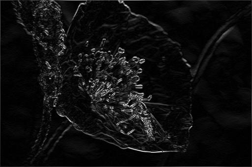
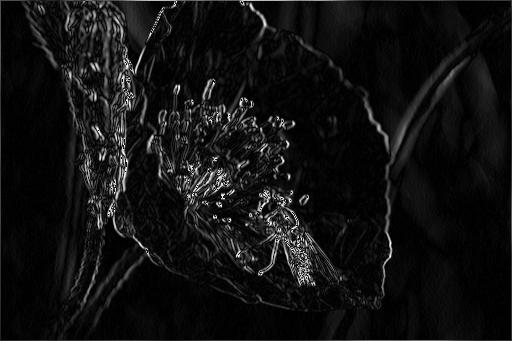
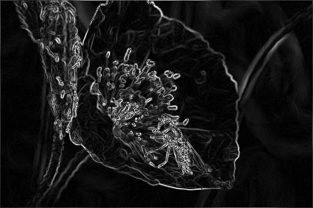
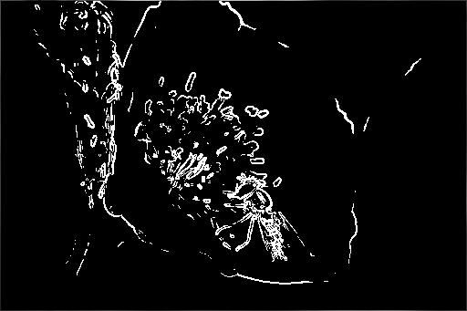
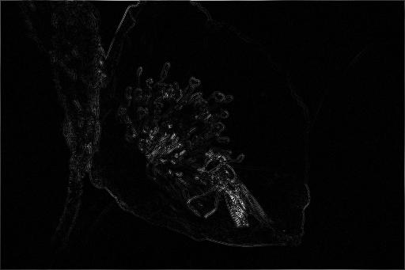
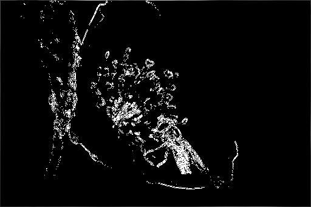
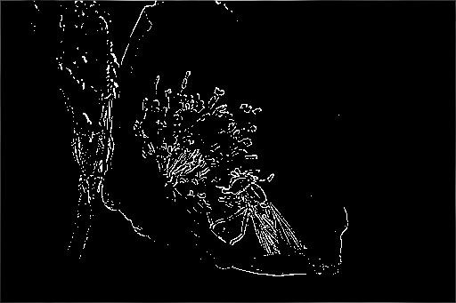
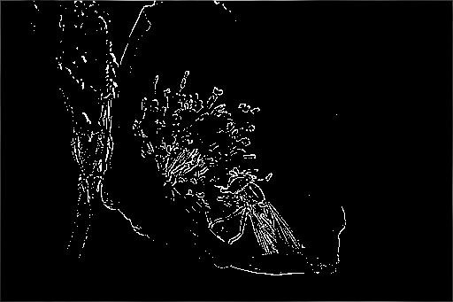

FPGA Edge Detection
Why do edge detection on an FPGA?
In a time sensitive application, only an FPGA can perform the calculations at the necessary speed. This can be applied to autonomous vehicles for object detection or realtime post processing applications.
How do you define an edge in a discrete set of points?
The best thing possible is to guess if a pixel is an edge by comparing it to its neighbors. A simple way is to set a threshold on the rate of change between one pixel and its neighbor. This exists in the form of a convolution. There are several types of edge detection convolutions that exist to perform the operation; the two most common are the Sobel and Laplace operators which both operate on 3x3 pixel grids.
Sobel
The Sobel matrix quite simply approximates the derivates in the x and y direction of the source image.
The x direction matrix is defined as: $ \begin{split}\left[\begin{array}{ccc} 1 & 2 & 1 \\ 0 & 0 & 0 \\ -1 & -2 & -1 \end{array}\right]\end{split} $
The y direction matrix is defined as: $ \begin{split}\left[\begin{array}{ccc} 1 & 0 & -1 \\ 2 & 0 & -2 \\ 1 & 0 & -1 \end{array}\right]\end{split} $
As an example, let's apply both matrices to this test image:
Applying the x direction matrix:
Applying the y direction matrix:
Combined, this results in the following image and a threshold can be established to obtain outlines:
 The Sobel matrix performs quite well, and it highlights the edges we expect it to highlight. For example, the hoverfly on the flower has its legs and eyes clearly outlined by this operation; the flower itself is also highlighted around the perimeter where there is a large contrast change.
Laplace
Laplace matrix is also a form of edge detection, but it estimates the second derivative. This is theoretically much more precise and accurate than a simple first derivative approximation. Although, it all sounds great on paper, this operator is easily distorted by image noise as seen in the example images below.
The Laplace matrix is defined as: $ \begin{split}\left[\begin{array}{ccc} 0 & -1 & 0 \\ -1 & 4 & -1 \\ 0 & -1 & 0 \end{array}\right]\end{split} $
 There is also a version of the matrix that includes the diagonals into the approximation: $ \begin{split}\left[\begin{array}{ccc} -1 & -1 & -1 \\ -1 & 8 & -1 \\ -1 & -1 & -1 \end{array}\right]\end{split} $
 

Hardware Considerations
Now here is the fun part. There is no way we can make the system can work at the speeds needed if the hardware is designed without thought. First of all, most images are reliably within 8-16 bits of color depth per pixel; if the image is destined to be displayed onto a screen, then it is typically 8-10 bits only. As an example, performing the Sobel matrix operation on an 8bit (RGB) image results in 38 multiplications, 11 additions, and 1 square root (all have to support 8bit depth). Let's think. Is there something about the matrices that stands out? Well, there should be. If you noticed, all the matrix entries are powers of two! This means that we can shift the bits (essentially a free operation) instead of multiplication. This brings the tally down to only 2 multiplications instead of 38! The reason why we can't avoid the last two multiplications because we need to compute the final magnitude of the pixel which uses the formula:
$ Pixel Magnitude = \sqrt{XMag^{2} + YMag^{2}} $ , luckily these two multiplications can be done in parallel at the cost of extra surface area.
On the other hand, Laplace now appears as a great alternative because there is no multiplication or square roots involved in the approximation. All we need to do is perform just one bitshift to the center pixel value and process 8 additions.
//Full adder in SystemVerilog
module FA(
input A,
input B,
input Cin,
output S,
output Cout);
always_ff @(posedge clk)
wire y = '0101;/*1bit addition with
carry-in and carry-out*/
assign {Cout, S} = A + B + Cin;
endmodule